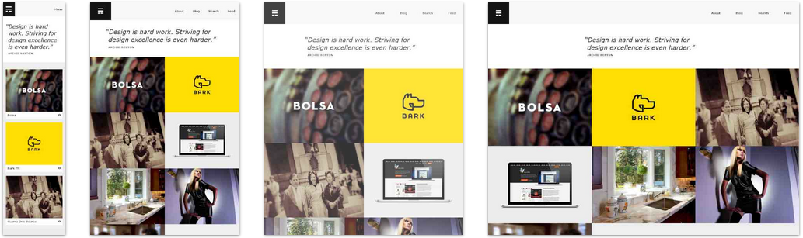
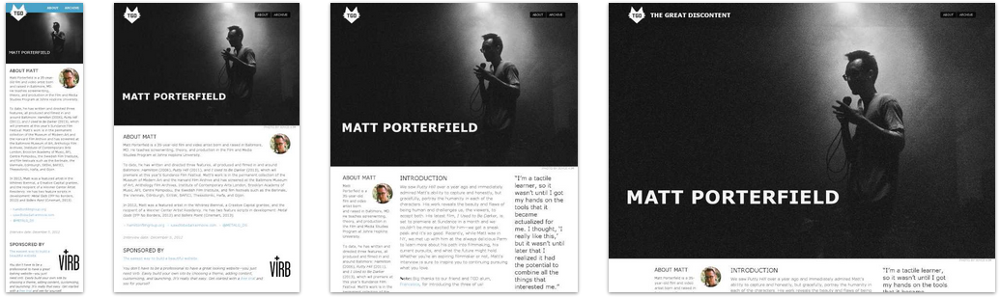

LIT Work XP Reference Guide
RWD - Responsive Web Design
One size fits all
Responsive Web Design is something that's really started to gain considerable attention in the world of web over the past 2-3 years. It all started when a web designer, Ethan Marcotte wrote a famous article which changed web page structure as we know it. The main thing you need to know about responsive web design is that it when implemented properly, it makes a website respond to its environment(eg. suitable on any device). This shift took time to gather traction but now in 2014, if businesses are wanting web sites created, they want them to be responsive.
Why go responsive?
Going responsive has it's own drawbacks but they are long-outweighed by the positives. The biggest issue in going responsive is time. The original approach to creating and positioning web sites was to use table-based layouts but this posed problems when users reduced their browser sizes or switched to smaller screens, forcing web sites to look strange and even content moving offscreen and out of view for the user. However, once developers/designers become more aware of a 'responsive first' approach, they can tailor web sites to respond to different screen dimensions much easier and with greater speed.
We are now living in an era where information is made readily-available to users via the mobile web. People are no longer waiting until they can get to a desktop/laptop device to view websites, they're using their smartphones or tablet devices. This is where RWD really excels as it gives the user a tailored-approach depending on the device they are using. This ensures that they aren't missing any content and everything they are looking for is being presented on screen as the developer/designer intended. Jeremy Keith once said "Stop thinking in pages. Start thinking in systems" - By tailoring websites per using RWD, we achieve this.
Below are various examples that highlight the power of Responsive Web Design. These are only a few examples taken from mediaqueri.es. Feel free to visit the site for more examples and witness how many companies are using RWD for their coporate websites.



How to go responsive
Responsive Web Design is achieved by incorporating the following 3 things into practice when designing/developing websites.
- CSS media queries
- Fluid media
- A gridset